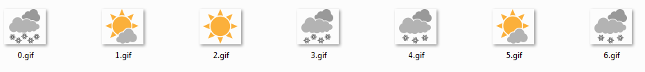

Web scraping using Python

Scraping web data using Python
In this tutorial, we will see how to scrap data from Environment Canada webpage.
1- Exploring the structure of the ECCC web page
We will extract the current weather conditions and weather forecast for Montreal.
import requests
import pandas as pd
# we download the web page
page = requests.get("https://meteo.gc.ca/city/pages/qc-147_metric_e.html")
# Using BeautifulSoup to analyze html code
from bs4 import BeautifulSoup
# we will analyze the previous content with BeautifulSoup
soup = BeautifulSoup(page.content,'html.parser')
soup.head()
[<meta charset="utf-8"/>,
<meta content="width=device-width, initial-scale=1" name="viewport"/>,
<meta content="Environment Canada" name="dcterms.creator"/>,
<meta content="eng" name="dcterms.language" title="ISO639-2"/>,
<meta content="Current conditions and forecasts including 7 day outlook, daily high/low temperature, warnings, chance of precipitation, pressure, humidity/wind chill (when applicable) historical data, normals, record values and sunrise/sunset times" name="description"/>,
<meta content="meteorology;weather;weather warnings;weather forecasts" name="dcterms.subject" title="scheme"/>,
<meta content="2013-04-16" name="dcterms.issued" title="W3CDTF"/>,
<meta content="2020-02-07" name="dcterms.modified" title="W3CDTF"/>,
<title>Montréal, QC - 7 Day Forecast - Environment Canada</title>,
<meta content="Montréal, QC - 7 Day Forecast - Environment Canada" name="dcterms.title"/>,
<link href="/template/gcweb/v5.0.1/assets/favicon.ico" rel="icon" type="image/x-icon"/>,
<link href="/template/gcweb/v5.0.1/css/theme.min.css" rel="stylesheet"/>,
<link href="/v175/css/city/jquery-ui-1.10.3.custom.min.css" rel="stylesheet"/>,
<noscript><link href="/template/gcweb/v5.0.1/css/noscript.min.css" rel="stylesheet"/></noscript>,
<link href="/template/gcweb/v5.0.1/css/noscript.min.css" rel="stylesheet"/>,
<link href="/rss/city/qc-147_e.xml" rel="alternate" title="ATOM feed for Montréal - Weather - Environment Canada" type="application/atom+xml"/>,
<link href="/rss/warning/qc-147_e.xml" rel="alternate" title="ATOM feed for Montréal - Warning - Environment Canada" type="application/atom+xml"/>,
<link href="/v175/css/city/city.css" rel="stylesheet"/>,
<link href="https://maxcdn.bootstrapcdn.com/font-awesome/4.7.0/css/font-awesome.css" rel="stylesheet"/>,
<link href="/v175/css/wxotemplate/wxo.css" rel="stylesheet">
<link href="/v175/css/wxotemplate/print-sm.css" rel="stylesheet"/>
<!--[if lte IE 9]><link rel="stylesheet" href="/v175/css/wxotemplate/wxo-ie8.css" /><![endif]-->
</link>,
<link href="/v175/css/wxotemplate/print-sm.css" rel="stylesheet"/>]
soup.title
<title>Montréal, QC - 7 Day Forecast - Environment Canada</title>
1- Reading current conditions
Column 1
conditions = soup.find(id="mainContent")
col1 = conditions.find_all(class_="dl-horizontal wxo-conds-col1")
today1 = col1[1]
#print(today1.prettify())
tmp1 = today1.select(".mrgn-bttm-0")
print(tmp1)
[<dd class="mrgn-bttm-0">Light Snow and Blowing Snow</dd>, <dd class="mrgn-bttm-0 wxo-metric-hide">98.5 <abbr title="kilopascals">kPa</abbr>
</dd>, <dd class="mrgn-bttm-0 wxo-imperial-hide wxo-city-hidden">29.1 inches</dd>, <dd class="mrgn-bttm-0">Falling</dd>]
short_desc = [tmp1[0].get_text()]
short_desc
['Light Snow and Blowing Snow']
pression = [tmp1[1].get_text().replace('\n','')]
trend =[ tmp1[3].get_text()]
weather = pd.DataFrame({"short_desc": short_desc,
"pression": pression,
"trend": trend,
})
weather
| short_desc | pression | trend | |
|---|---|---|---|
| 0 | Light Snow and Blowing Snow | 98.5 kPa | Falling |
Column 2
col2 = conditions.find_all(class_="dl-horizontal wxo-conds-col2")
today2 = col2[1]
#print(today2.prettify())
tmp2 = today2.select(".mrgn-bttm-0")
print(tmp2)
[<dd class="mrgn-bttm-0 wxo-metric-hide">-6.7°<abbr title="Celsius">C</abbr>
</dd>, <dd class="mrgn-bttm-0 wxo-imperial-hide wxo-city-hidden">19.9°
<abbr title="Fahrenheit">F</abbr>
</dd>, <dd class="mrgn-bttm-0 wxo-metric-hide">-8.8°<abbr title="Celsius">C</abbr>
</dd>, <dd class="mrgn-bttm-0 wxo-imperial-hide wxo-city-hidden">16.2°<abbr title="Fahrenheit">F</abbr>
</dd>, <dd class="mrgn-bttm-0">85%</dd>]
temperature = [tmp2[0].get_text().replace('\n','')]
rosee = [tmp2[2].get_text().replace('\n','')]
humidity = [tmp2[4].get_text().replace('\n','')]
weather = pd.DataFrame({"temperature": temperature,
"temperature_rosee": rosee,
"humidity": humidity,
})
weather
| temperature | temperature_rosee | humidity | |
|---|---|---|---|
| 0 | -6.7°C | -8.8°C | 85% |
Column 3
col3 = conditions.find_all(class_="dl-horizontal wxo-conds-col3")
today3 = col3[1]
#print(today2.prettify())
tmp3 = today3.select(".mrgn-bttm-0")
print(tmp3)
[<dd class="longContent mrgn-bttm-0 wxo-metric-hide">
<abbr title="North">N</abbr> 35 <br class="visible-xs"/>gust 53 <abbr title="kilometres per hour">km/h</abbr>
</dd>, <dd class="longContent mrgn-bttm-0 wxo-imperial-hide wxo-city-hidden">
<abbr title="North">N</abbr> 22 <br class="visible-xs"/>gust 33 <abbr title="miles per hour">mph</abbr>
</dd>, <dd class="mrgn-bttm-0 wxo-metric-hide">-16</dd>, <dd class="mrgn-bttm-0 wxo-imperial-hide wxo-city-hidden">3</dd>, <dd class="mrgn-bttm-0 wxo-metric-hide">0.8 <abbr title="kilometres">km</abbr>
</dd>, <dd class="mrgn-bttm-0 wxo-imperial-hide wxo-city-hidden">0.5 mile
</dd>]
wind = [tmp3[0].get_text().replace('\n','')]
visibility = [tmp3[2].get_text().replace('\n','')]
weather = pd.DataFrame({"short_desc": short_desc,
"pression": pression,
"Trend": trend,
"temperature": temperature,
"temperature_rosee": rosee,
"humidity": humidity,
"wind": wind,
"visibility": visibility,
})
weather
| short_desc | pression | Trend | temperature | temperature_rosee | humidity | wind | visibility | |
|---|---|---|---|---|---|---|---|---|
| 0 | Light Snow and Blowing Snow | 98.5 kPa | Falling | -6.7°C | -8.8°C | 85% | N 35 gust 53 km/h | -16 |
weather.to_csv("current.csv", header = True, sep = ',',encoding='utf-8')
2- Reading forecasting values
period_tags = soup.find(id="mainContent")
row1 = period_tags.find_all(class_="div-row div-row1 div-row-head")
row1
[<div class="div-row div-row1 div-row-head"><a href="/forecast/hourly/qc-147_metric_e.html"><strong title="Friday">Fri</strong><br/>7 <abbr title="February">Feb</abbr></a></div>,
<div class="div-row div-row1 div-row-head">
<strong title="Saturday">Sat</strong><br/>8 <abbr title="February">Feb</abbr>
</div>,
<div class="div-row div-row1 div-row-head">
<strong title="Sunday">Sun</strong><br/>9 <abbr title="February">Feb</abbr>
</div>,
<div class="div-row div-row1 div-row-head">
<strong title="Monday">Mon</strong><br/>10 <abbr title="February">Feb</abbr>
</div>,
<div class="div-row div-row1 div-row-head">
<strong title="Tuesday">Tue</strong><br/>11 <abbr title="February">Feb</abbr>
</div>,
<div class="div-row div-row1 div-row-head">
<strong title="Wednesday">Wed</strong><br/>12 <abbr title="February">Feb</abbr>
</div>,
<div class="div-row div-row1 div-row-head">
<strong title="Thursday">Thu</strong><br/>13 <abbr title="February">Feb</abbr>
</div>]
period_tags = soup.find(id="mainContent")
row1 = period_tags.find_all(class_="div-row div-row1 div-row-head")
periods = [pt.get_text().replace('\xa0', ' ').replace('\n','') for pt in row1]
periods
['Fri7 Feb',
'Sat8 Feb',
'Sun9 Feb',
'Mon10 Feb',
'Tue11 Feb',
'Wed12 Feb',
'Thu13 Feb']
period_tags = soup.find(id="mainContent")
row2 = period_tags.find_all(class_="div-row div-row2 div-row-data")
row2[1]
<div class="div-row div-row2 div-row-data">
<img alt="A mix of sun and cloud" class="center-block" height="51" src="/weathericons/02.gif" width="60"/><p class="mrgn-bttm-0"><span class="high wxo-metric-hide" title="max">-13°<abbr title="Celsius">C</abbr></span><span class="high wxo-imperial-hide wxo-city-hidden" title="max">9°<abbr title="Fahrenheit">F</abbr></span></p>
<p class="mrgn-bttm-0 pop text-center"> </p>
<p class="mrgn-bttm-0">A mix of sun and cloud</p>
</div>
period_tags = soup.find(id="mainContent")
row2 = period_tags.find_all(class_="div-row div-row2 div-row-data")
temperature_f = [pt.get_text().split('\n')[1][:] for pt in row2]
temperature_f
['-5°C23°F',
'-13°C9°F',
'-6°C21°F',
'-3°C27°F',
'-2°C28°F',
'-6°C21°F',
'-6°C21°F']
temperature_2=[]
for val in enumerate(temperature_f):
temperature_2.append(val[1].split('C')[0] + 'C')
temperature_2
['-5°C', '-13°C', '-6°C', '-3°C', '-2°C', '-6°C', '-6°C']
conditions_f = [pt.get_text().split('\n')[3] for pt in row2]
conditions_f
['Snow at times heavy and blowing snow',
'A mix of sun and cloud',
'Sunny',
'Snow',
'Periods of snow',
'A mix of sun and cloud',
'Chance of flurries']
weather_f = pd.DataFrame({"Period": periods,
"temperature_f": temperature_f,
"conditions_f":conditions_f,
})
weather_f
| Period | temperature_f | conditions_f | |
|---|---|---|---|
| 0 | Fri7 Feb | -5°C23°F | Snow at times heavy and blowing snow |
| 1 | Sat8 Feb | -13°C9°F | A mix of sun and cloud |
| 2 | Sun9 Feb | -6°C21°F | Sunny |
| 3 | Mon10 Feb | -3°C27°F | Snow |
| 4 | Tue11 Feb | -2°C28°F | Periods of snow |
| 5 | Wed12 Feb | -6°C21°F | A mix of sun and cloud |
| 6 | Thu13 Feb | -6°C21°F | Chance of flurries |
3- Download of weather icons for the next 7 days
from urllib import request
row3 = period_tags.find_all(class_="div-row div-row2 div-row-data")
i = 0
for images in row3:
s = images.find('img')
f = open(str(i) + '.gif', 'wb')
f.write(request.urlopen("https://meteo.gc.ca/weathericons/"+str(s)[str(s).find('gif')-3:(str(s).find('gif'))-1]+".gif").read())
f.close()
i += 1

weather_f.to_csv("forecast.csv", header = True, sep = ',',encoding='utf-8')
Guillaume Dueymes
Data Scientist and Research Assistant
My research interests include data science, data management and climate science.